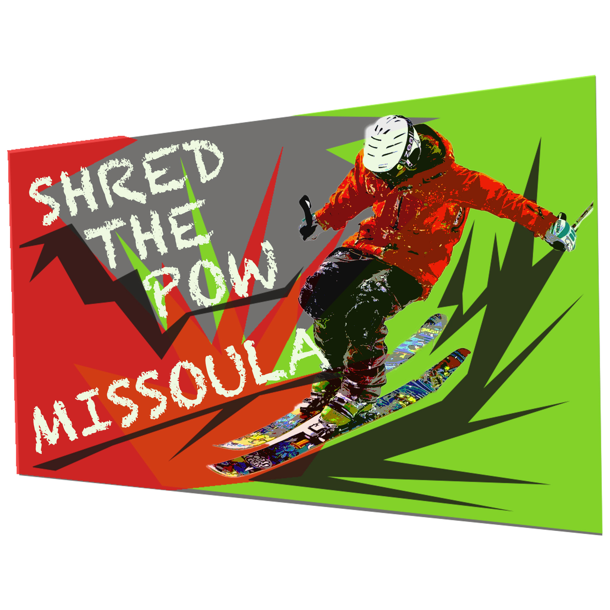
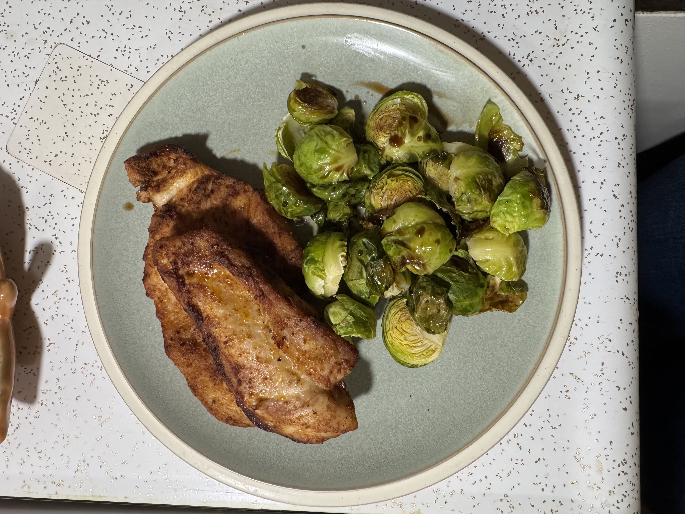
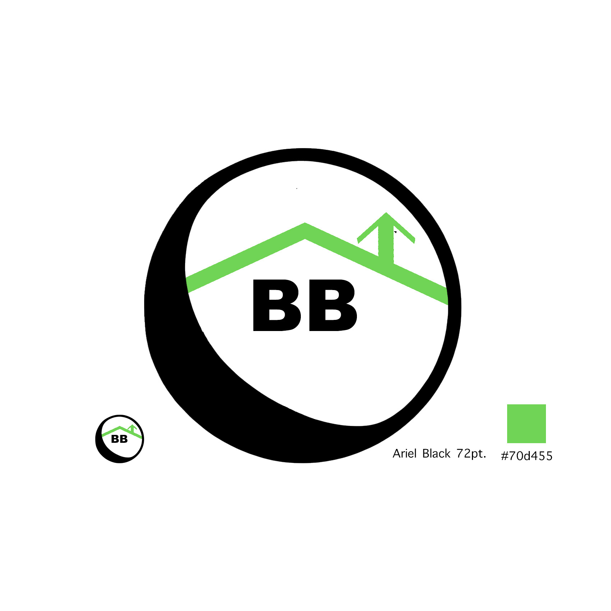

Website Ideas
10 Feb. 2025
Learn more about why I chose these ideas
Personal Portfolio - Tone: Professional but with creative flare

Creative Work Inspiration
Recipe Blog - Tone: Creative but easily readable

Food Blog Inspiration
Fake Brand Home Page - Tone: Professional and organized on a grid system

Brand Logo Inspiration